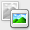
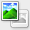
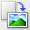
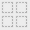
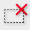

This mode allows you to scan easily by following the on-screen steps.
This section describes the settings and functions available on the Basic Mode tab.
When scanning from the ADF (Auto Document Feeder), documents are scanned without preview.
(1) Settings and Operation Buttons
(2) Toolbar
(3) Preview Area
 Note
NoteThe displayed items vary by document type and how the screen was opened.
Select Source
Photo(Color)
Scan color photos.
Magazine(Color)
Scan color magazines.
Newspaper(Grayscale)
Scan text and line drawings in black and white.
Document(Grayscale)
Scan documents and photos in black and white.
Select this mode to create high-resolution black and white images.
Document(Color) ADF Simplex
Scan documents from the ADF in color.
Document(Grayscale) ADF Simplex
Scan documents from the ADF in black and white.
Document(Color) ADF Duplex
Scan both sides of documents from the ADF in color.
Documents are scanned in the long-side stapling format, with the end touching the feeder as the upper end.
Document(Grayscale) ADF Duplex
Scan both sides of documents from the ADF in black and white.
Documents are scanned in the long-side stapling format, with the end touching the feeder as the upper end.
 Important
ImportantSome applications do not support continuous scanning from the ADF. For details, refer to the application's manual.
NoteWhen you select a document type, the unsharp mask function will be active.
When you select an option other than the ADF types, the image adjustment function which adjusts images based on the document type will also be active.
If you select Magazine(Color), the descreen function will be active.
Display Preview Image
Preview
Performs a trial scan.
NoteWhen using the machine for the first time, scanner calibration starts automatically. Wait a while until the preview image appears.
Destination
Select what you want to do with the scanned image.
Select this to print the scanned image on a printer.
Image display
Select this to view the scanned image on a monitor.
OCR
Select this to use the scanned image with OCR software.
"OCR software" is software that converts text scanned as an image into text data that can be edited in word processors and other programs.
Output Size
Select an output size.
Output size options vary by the item selected in Destination.
Flexible
Allows you to freely adjust the cropping frames.
Drag the mouse over a thumbnail to display a cropping frame. When a cropping frame is displayed, the portion within the cropping frame will be scanned. When no cropping frame is displayed, each frame is scanned individually.
When no cropping frame is displayed, the entire Preview area will be scanned. When a cropping frame is displayed, the portion within the cropping frame will be scanned.
Paper Size (L, A4, etc.)
Select an output paper size. The portion within the cropping frame will be scanned at the size of the selected paper size. You can drag the cropping frame to enlarge/reduce it while maintaining the aspect ratio.
Monitor Size (1024 x 768 pixels, etc.)
Select an output size in pixels.
A cropping frame of the selected monitor size will be displayed and the portion within the cropping frame will be scanned. You can drag the cropping frame to enlarge/reduce it while maintaining the aspect ratio.
Add/Delete...
Opens the Add/Delete the Output Size dialog, in which you can specify custom output sizes. You can select this option when Destination is Print or Image display.
In the Add/Delete the Output Size dialog, you can specify multiple output sizes and save them at one time. Saved items will be registered to the Output Size list and can be selected, along with the predefined items.
Add
To add a size, enter Output Size Name, Width, and Height, then click Add. For Unit, you can select inches or mm when Destination is Print but you can only select pixels when Destination is Image display. The name of the added size appears in Output Size List. Click Save to save the items listed in Output Size List.
Delete
To delete an item, select it in Output Size List and click Delete. Click Save to save the items listed in Output Size List.
ImportantYou cannot delete predefined output sizes such as A4 and 1024 x 768 pixels.
NoteSave up to 10 items.
An error message appears when you enter a value outside the setting range. Enter a value within the setting range.
NoteFor details on whether or how the cropping frame is initially displayed on a preview image, see Cropping Frame on Previewed Images in "Preview Tab" (Preferences dialog).
Invert aspect ratio
This button is available when Output Size is set to anything but Flexible.
Click this button to rotate the cropping frame. Click again to return it to the original orientation.
Adjust cropping frames
You can adjust the scan area within the Preview area.
If an area is not specified, the document will be scanned at the document size (Auto Crop). If an area is specified, only the portion in the cropping frame will be scanned.
Image corrections
Allows you to apply corrections to images.
ImportantAvailable functions vary by the document type selected in Select Source.
Auto Document Fix, Fading correction and Backlight correction are available when Recommended is selected on the Color Settings tab of the Preferences dialog.
Auto Document Fix
Sharpens text in a document or magazine for better readability.
ImportantWhen this checkbox is selected in ScanGear (scanner driver) started from MP Navigator EX, the files can be saved in JPEG/Exif or PDF format only.
Scanning may take longer than usual when this checkbox is selected.
The color tone may change from the source image due to corrections. In that case, deselect the checkbox and scan.
Auto Document Fix may not be effective if the scan area is too small.
Fading correction
Corrects and scans photos that have faded with time or have a colorcast.
Backlight correction
Corrects photos that have been shot against light.
Gutter shadow correction
Corrects shadows that appear between pages when scanning open booklets.
ImportantFor precautions on using this function, see "Gutter Shadow Correction."
Color Pattern...
Allows you to adjust the image's overall color. You can correct colors that have faded due to colorcast, etc. and reproduce natural colors while previewing color changes.
 Adjusting Colors Using a Color Pattern
Adjusting Colors Using a Color Pattern
ImportantThis setting is not available when you select Color Matching on the Color Settings tab of the Preferences dialog.
Perform Scan
Scan
Scanning starts.
NoteWhen scanning starts, the progress will be displayed. Click Cancel to cancel the scan.
Preferences...
The Preferences dialog opens and you can make scan/preview settings.
Close
Closes ScanGear.
Toolbar
You can adjust or rotate preview images. The buttons displayed on the Toolbar vary by view.
 (Thumbnail) /  (Whole Image)
Switches the view in the Preview area.
(Rotate Left)
Rotates the preview image 90 degrees counter-clockwise.
- The result will be reflected in the scanned image.
- The image returns to its original state when you preview again.
 (Rotate Right)
Rotates the preview image 90 degrees clockwise.
- The result will be reflected in the scanned image.
- The image returns to its original state when you preview again.
(Auto Crop)
Displays and adjusts the cropping frame automatically to the size of the document displayed in the Preview area. The scan area is reduced every time you click this button if there are croppable areas within the cropping frame.
(Check All Frames)
This button is available when two or more frames are displayed.
Selects the checkbox of the image in thumbnail view.
(Uncheck All Frames)
This button is available when two or more frames are displayed.
Deselects the checkbox of the image in thumbnail view.
(Select All Frames)
This button is available when two or more frames are displayed.
Selects the image in thumbnail view and the image will be outlined in blue.
 (Select All Cropping Frames)
This button is available when there are two or more cropping frames.
All cropping frames will be displayed in thick broken lines. The settings will be applied to all the cropping frames.
 (Remove Cropping Frame)
Removes the selected cropping frame.
(Information)
Displays the version of ScanGear and the current scan settings (document type, etc.).
(Open Guide)
This page appears.
Preview Area
This is where a trial image is displayed after you click Preview. You can also check the results of the settings (image corrections, color adjustments, etc.) made in "Settings and Operation Buttons."
Thumbnails of images cropped to the document size are displayed. Only the images with the checkbox selected will be scanned.
NoteWhen multiple images are previewed, different outlines indicate different selection status.
- Focus Frame (thick blue outline): The displayed settings will be applied.
- Selected Frame (thin blue outline): The settings will be applied to the Focus Frame and Selected Frames simultaneously. You can select multiple images by clicking them while pressing the command key.
- Unselected (no outline): The settings will not be applied.
Double-click a frame to zoom in on the image. Click (Frame Advance) at the bottom of the screen to display the previous or next frame. Double-click the frame again to return the display to its non-magnified state.
Items on the Platen are scanned and displayed as a single image. All portions in the cropping frames will be scanned.
NoteYou can specify the scan area (cropping frame) on the displayed image. In thumbnail view, you can only create one cropping frame per image. In whole image view, you can create multiple cropping frames.